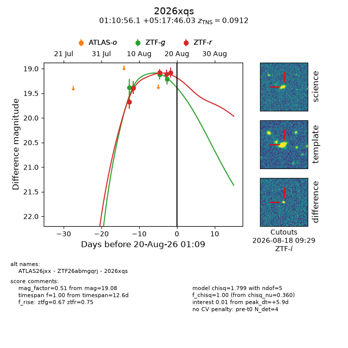
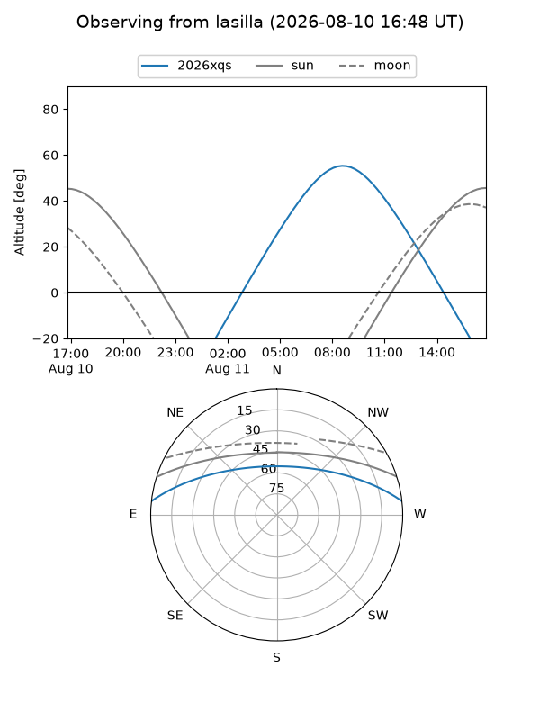
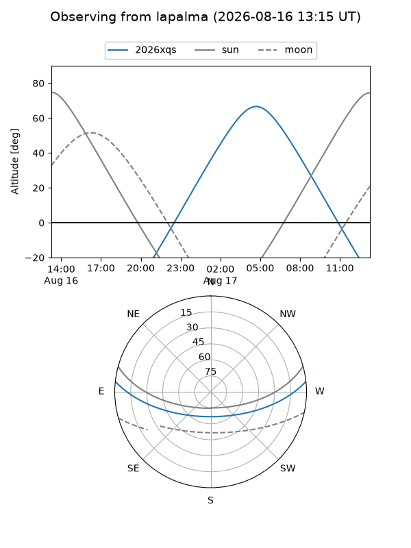
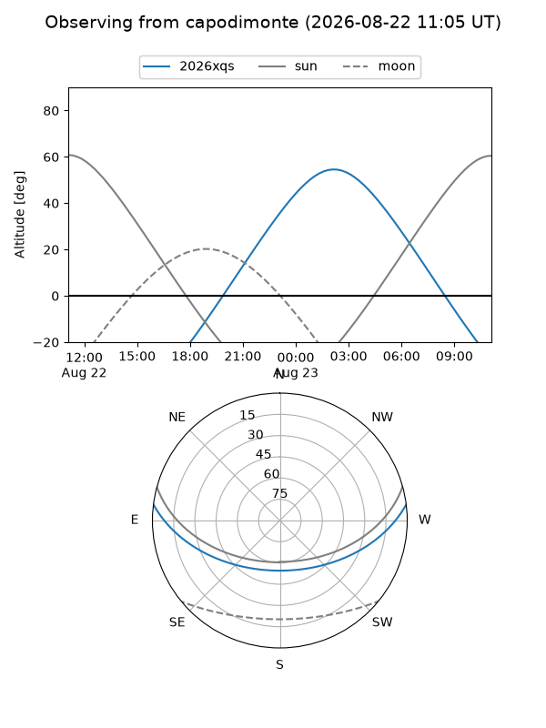
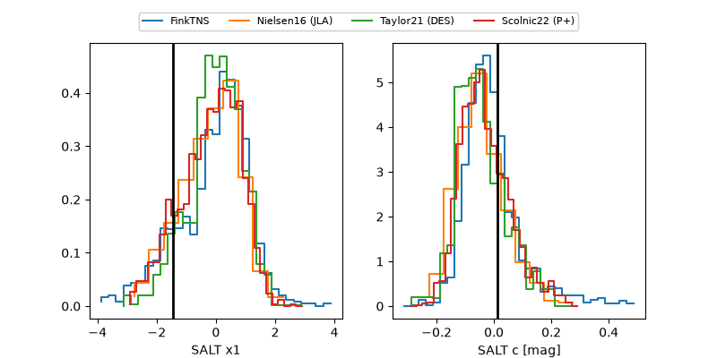

2026xqs
Target 2026xqs at 2026-08-20 01:13
Aliases and brokers:
FINK-ZTF: ztf.fink-portal.org/ZTF26abmgqrj
Lasair-ZTF: lasair-ztf.lsst.ac.uk/objects/ZTF26abmgqrj
ALeRCE-ZTF: alerce.online/object/ZTF26abmgqrj
YSE-PZ: ziggy.ucolick.org/yse/transient_detail/2026xqs
TNS name: wis-tns.org/object/2026xqs
Direct TNS query: direct search
alt names
ZTF26abmgqrj (ztf,fink_ztf)
2026xqs (tns,yse)
ATLAS26jxx (atlas)
Coordinates:
equatorial (ra, dec) = 17.7339,+5.29612
equatorial (HMS+DMS) = 01:10:56.14,+05:17:46.03
galactic (l, b) = (131.9263,-57.23473)
Flags:
TNS type: SN Ia
TNS redshift: 0.0912
peak dt: +5.9
Photometry:
last ztfg=19.21, ztfr=19.08
4 ztfg, 5 ztfr detections
Lightcurve

Visibility



Additional plots
